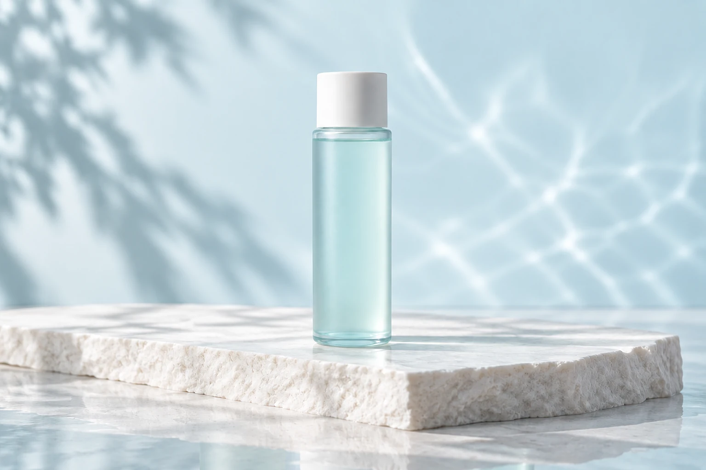

TONER
化粧水
水音の香り / 150mL
¥2,860 （税込参考価格）
製品を詳しく見る ↗
TONER
水音の香り / 150mL
¥2,860 税込参考価格
洗顔のあとに、水のようなひと呼吸。
さらりとした感触を、手のひらでゆっくりと。洗顔のあと、いつものお手入れのはじまりに使う化粧水です。
この製品は架空のコンセプトです。デモ確認画面まで体験できます。実際の購入・個人情報の入力・外部送信はありません。
HOW TO USE
PLEASE NOTE
本ページは架空製品の使用シーンを紹介しています。肌に異常があるときや、肌に合わないときは使用しない想定です。香りや質感の感じ方には個人差があります。
目のまわりは避け、目に入った場合は洗い流す想定です。乳幼児の手の届かない場所で、直射日光や高温を避けて保管する設定です。
成分・処方・試験・認証は設定していません。実在する製品の取扱説明としてはご利用いただけません。
CONTINUE YOUR ROUTINE